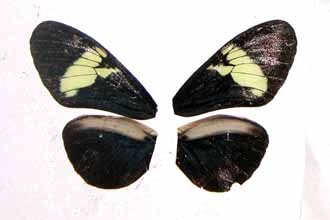
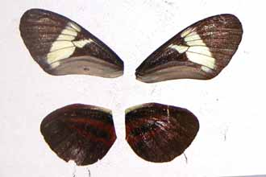

Heliconius cydno cordula
Venezuela: Táchira, San Cristobal, Jardín Botánico de Táchira, 1060m
Collected by Jesús Mavárez, October 2003
© James Mallet
Return to table of specimens
To next specimen
To previous specimen {NONE}
Last updated: 2 November 2003